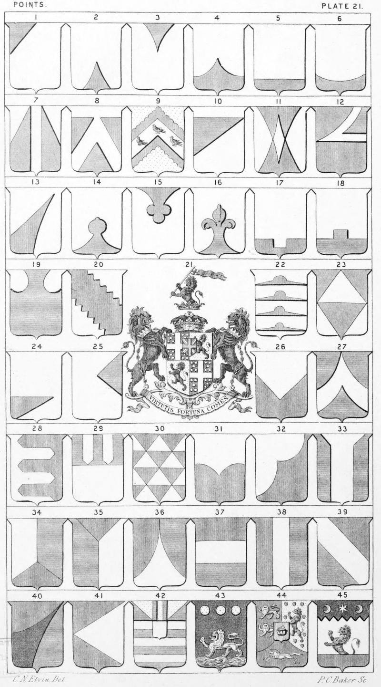

Plate 21.

Plate 21.
- A Point dexter., or Point dexter
parted
- Point pointed
- Point in point reversed
- Point in point, also termed a Graft
- Plain Point, or a Point in base
- Point Champaine, Champion, or a
Base chausse
- Vert Two Squires in point from
chief on either side, a pale ar. or
Points dexter and sinister from
the chief on either side of a pale
- Ar. a Point pointed az. and two
points dexter and sinister
removed gu.
- Gu. on a chev. ar., three martlets of
the first betw. two points dexter
and sinister engrailed and a
Point pointed invecked or.
- Point dexter removed extended to
the sinister side
- Ar. Points pointed to the chief and
reversed in base counterchanged gu.
- Gu. Point sinister removed and extended to dexter fesse point ar.
charged with the like point az.
- Point pointed in point from dexter
base to sinister chief
- Point pointed in point on the top a pomel, or
pomelled
- Point pointed in point reversed bottony at end
- Point pointed in point fleury, or a Point in Point
flory at the top
- Point Escartelled
- Point with one embattlement
- Point dexter and sinister convexed, or
champourned
- Point sinister and dexter base indented
- Arms of Augmentation see Augmentation
- Points four pointed and Nowy on
the top in pale
- Points four, or Lozenge in point. Per-fess ar. and vert, four points
counterchanged. Hinxley
- A Base Esquire, or a Point based
- A Sinister Quarter pointed
- Per-Pile in base, or Per Chevron
reversed
- A Point dexter and Sinister arched
and a Point in point
- Urdée in point, or contrary urdee
- Per-Fesse Varrey in Point, or per-fesse ar. urdée in point, paleways
of the first and az.
- Barry point in point, or barry per-fret
- Per-fesse double arched, or gored, or
per-fesse point in point reversed
- A Gore, or Goar sinister
- Two Gussets, or a dexter and sinister gusset
- Ente in point ar. az. and gu.
- Tierce in Pairle gu. az. and ar.
- Tierce in mantle gu. az. and ar., or
parted in three mantle
- Tierce in Fesse also termed Points three
- Tierce in Pale
- Tierce in Bend
- Tierce in Gyrons bend sinisterways
- Tierce in Pile from Sinister to Dexter, or Traverse from the sinister
- Barry of six ar. and az. an inescutcheon of the last; on a chief or,
two pallets betw. as many gyrons
of the second, sometimes blazoned two based esquires, or Squires
base dexter and sinister, instead
of gyron's
- Sa. on a Point wavy ppr. a lion pass, or, in chief three bezants
- Arms of Hanover. Field divided
per-pale and per-chev. enarched
st. Gu. two lions pass, guard,
in pale or, for Brunswick. 2nd.
Or, semee of hearts ppr. a lion
ramp. az. for Luenburgh. 3rd.
Gu. a horse courant ar. for
Saxony. In the centre (or En
Surcoat) on an inescutcheon gu.
the crown of Charlemagne ppr.
- Ar. a demi lion ramp. az. naissant
out of a plain point gu., on a
chief indented sa., an estoile
betw. two increscents of the first